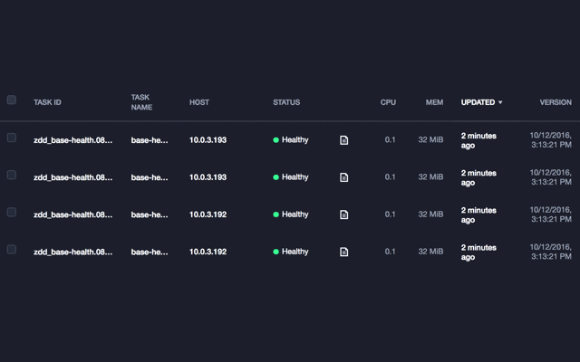

Have you ever wondered how exactly to roll out a service without causing downtimes? Look no further, we have something for you:
The DC/OS Zero Downtime Deployments lab.

This lab aims at providing an introduction to service deployments by walking you, step-by-step, through recipes how to roll out new versions of a DC/OS service without downtimes. We explain the basic concepts, such as health checks or canary deployments, in detail and provide instructions along with the necessary configurations. Each section contains a discussion of the underlying motivation and as well as tips and recommendation when to use what.
We’re covering the following topics in the Zero Downtime Deployments lab:
- Rolling upgrades, without and with health checks
- How and when to use readiness checks
- Minimizing overcapacity during deployments
- Canary deployments
- Blue-Green deployments
If you have a DC/OS 1.8 up and running, it should take you roughly 45 min to go through all the exercises.
Give it a try today and let us know what you think or what is missing!